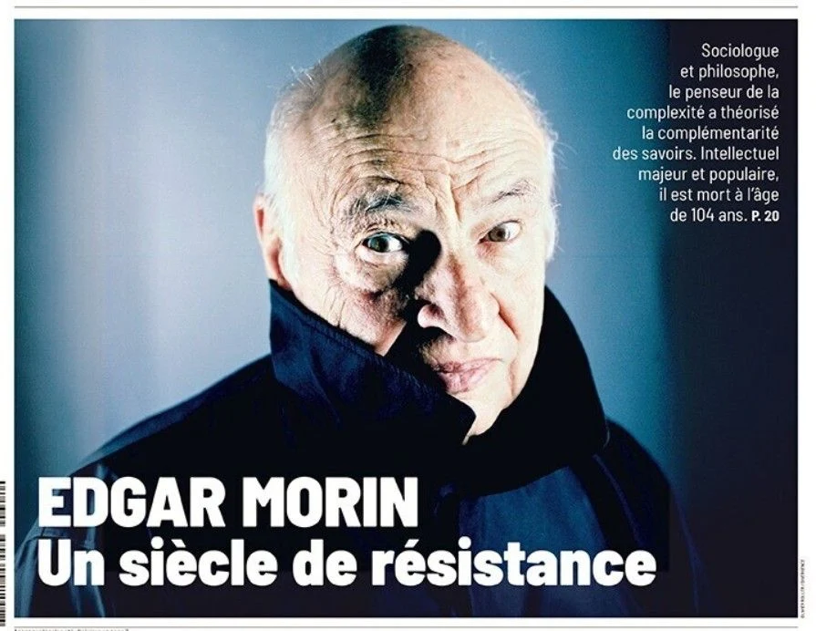

Tribune relayée
Patrick Le Hyaric rend hommage à Edgar Morin
Date indiquée par Facebook · 4 juin 2026
Repères éditoriaux
Patrick Le Hyaric salue le résistant et le penseur Edgar Morin à l’occasion de l’hommage national. Il rappelle ses engagements et interpelle le pouvoir sur l’écart entre les honneurs officiels et l’attention portée à son travail.
Texte conservé avec la publication
Edgard Morin
On est heureux qu’un hommage national soit rendu à Edgar Morin. Dommage que celui-ci soit prononcé par une personne qui n’a jamais tenu aucun compte du travail passionné du résistant, sociologue, philosophe, militant de l’humanité dans toute ses complexités, militant d’une politique de civilisation à même de reconstruire un monde renversé, au bord de l’effondrement. Un monde secoué par le colonialisme en Palestine et au Liban, un monde ou les guerres font couler le sang et prive des millions d’êtres humains de la vie et d’une vie digne pour tant d’autre.
Edgard Morin, ami de L’Humanité ne refusait jamais de s’exprimer dans les pages du quotidien fondé par Jean Jaurès. Il ne refusait aucun dialogue. Je me souviens d’une belle soirée prolongée autour de nourritures terrestres et intellectuelle à Aubervilliers avec nos amis Jack Ralite et Edwy Plenel après un magnifique débat au théâtre de la commune.
Lors de cette soirée et souvent depuis, je ne cessais de contempler l’énorme gâchis que fut son exclusion du parti communiste et celui de bien d’autres.
Edgar Morin avait compris, dans ces complexités du monde, au cœur de nombre de questionnements, de contradictions que porte chacune et chacun d’entre nous que l’avenir ne se bâtit dans les certitudes closes, les simplifications brutales, les stériles postures mais dans l’écoute, la connaissance, le lien, les reliances. Celle que les sombres machines du prêt à penser, les dogmatiques et les algorithmes ou les tableaux comptables s’acharnent à séparer : la raison et la poésie, la science et la conscience, la nation et l’humanité, la liberté et la fraternité ou l’égalité, l’émancipation humaine et le communisme.
Dans un monde ou se répand la culture hors sol de la peur, de la division et de l’affrontement entre humain, d’hautaines persécutions contre la nature, de couteaux lancé contre la paix, Edgar Morin appelait à ne jamais séparer le réel de sa transformation, à ne pas séparer la lucidité de l’espérance.
Son parti s’était séparé de lui, mais il ne s’était pas séparé du communisme. Il continuera de nous accompagner.
Patrick Le Hyaric
Edgard Morin
On est heureux qu’un hommage national soit rendu à Edgar Morin. Dommage que celui-ci soit prononcé par une personne qui n’a jamais tenu aucun compte du travail passionné du résistant, sociologue, philosophe, militant de l’humanité dans toute ses complexités, militant d’une politique de civilisation à même de reconstruire un monde renversé, au bord de l’effondrement. Un monde secoué par le colonialisme en Palestine et au Liban, un monde ou les guerres font couler le sang et prive des millions d’êtres humains de la vie et d’une vie digne pour tant d’autre.
Edgard Morin, ami de L’Humanité ne refusait jamais de s’exprimer dans les pages du quotidien fondé par Jean Jaurès. Il ne refusait aucun dialogue. Je me souviens d’une belle soirée prolongée autour de nourritures terrestres et intellectuelle à Aubervilliers avec nos amis Jack Ralite et Edwy Plenel après un magnifique débat au théâtre de la commune.
Lors de cette soirée et souvent depuis, je ne cessais de contempler l’énorme gâchis que fut son exclusion du parti communiste et celui de bien d’autres.
Edgar Morin avait compris, dans ces complexités du monde, au cœur de nombre de questionnements, de contradictions que porte chacune et chacun d’entre nous que l’avenir ne se bâtit dans les certitudes closes, les simplifications brutales, les stériles postures mais dans l’écoute, la connaissance, le lien, les reliances. Celle que les sombres machines du prêt à penser, les dogmatiques et les algorithmes ou les tableaux comptables s’acharnent à séparer : la raison et la poésie, la science et la conscience, la nation et l’humanité, la liberté et la fraternité ou l’égalité, l’émancipation humaine et le communisme.
Dans un monde ou se répand la culture hors sol de la peur, de la division et de l’affrontement entre humain, d’hautaines persécutions contre la nature, de couteaux lancé contre la paix, Edgar Morin appelait à ne jamais séparer le réel de sa transformation, à ne pas séparer la lucidité de l’espérance.
Son parti s’était séparé de lui, mais il ne s’était pas séparé du communisme. Il continuera de nous accompagner.
@[100045022687743:2048:Patrick Le Hyaric]

Sources
Archive rouge · export Facebook · AR-0002-FB-00762
À lire aussi · Pass culture, non à la punition collective ! · Le lien d’origine